ODOO 19 | COMMUNITY AND ENTERPRISE | BY ZIVOIT TECHNOLOGIES
Run your customs bonded factory inside Odoo. Track every imported input from the bill of entry to the finished product, calculate duty and interest on every clearance, and produce the monthly return for the bond officer in one click.
Duty-deferred ledger Bill of entry matching Ex-bond clearances Export and scrap Section 61 interest Monthly return in Excel and PDF
Under the Manufacture and Other Operations in Warehouse Regulations, 2019 (Sections 58 and 65 of the Customs Act, 1962), a factory licensed as a private bonded warehouse can import raw materials and capital goods without paying customs duty upfront. Duty is paid only on the imported content of goods sold in India. Exported goods pay no duty at all, and there is no export obligation. The cash benefit is large, but so is the record keeping.
Regulation 17 requires records of every receipt, operation, sample and removal, kept for five years with a digital backup, and a return to the bond officer within ten days after each month ends.
Every domestic sale must be traced back through the bill of materials to the bills of entry it used, so that duty is paid only on that imported content. In spreadsheets this is slow and error-prone.
It records all of this automatically from your normal Odoo purchases, manufacturing orders, deliveries and scrap, and turns it into the duty ledger, clearances and monthly return.
Record the Section 58 licence, Section 65 permission, bond, customs station and validity. Mark any warehouse location as bonded; sub-locations follow automatically.
Imported lines are flagged as bonded. One click creates the into-bond bill of entry with assessable value, BCD, SWS and IGST per line, using default rates from the product.
Receipts are matched to the confirmed bill of entry. Receipts that are not covered, or exceed the declared quantity, are blocked so bonded stock always has a customs document.
When a manufacturing order is completed, the value and duty of the imported inputs it consumed (first in, first out) become the duty content of the finished batch, including sub-assemblies.
Deliveries from bond create clearances automatically: home consumption with duty payable, export with no duty, scrap (or destruction under supervision) and returns to the supplier.
Goods cleared as such after the interest-free period (90 days by default) get interest calculated at your configured rate. An ageing view shows the exposure before you clear.
Every movement is written to a register that cannot be edited or deleted, with list, pivot and graph views for the duty ledger by month, movement, product and bill of entry.
Receipts, operations, removals and the closing balance by bill of entry and batch, as an Excel workbook and a signed PDF. Returns are created each month with a reminder before the due date.
IGST deferral, interest rate, interest-free days, return due day and the bill of entry requirement are settings, so you can adapt when customs rules change.
Duty deferred in bond, bills of entry in bond, clearances to file or pay, inputs past the interest-free period, the next return due date and duty paid this month. Every figure opens the records behind it.
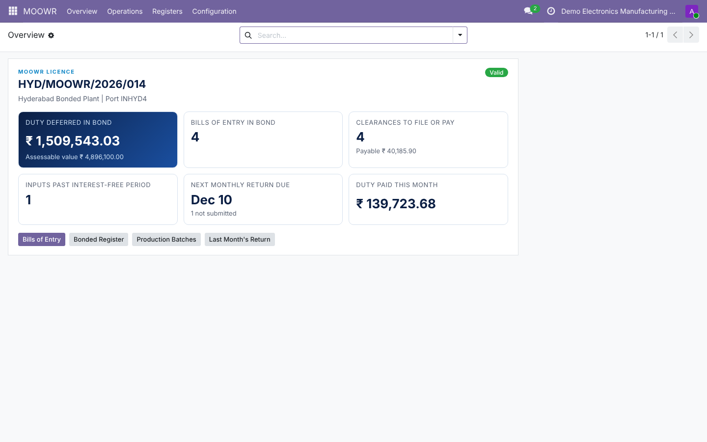
Licence, Section 65 permission, bond, customs station and validity, with the bonded locations and the duty and compliance rules.
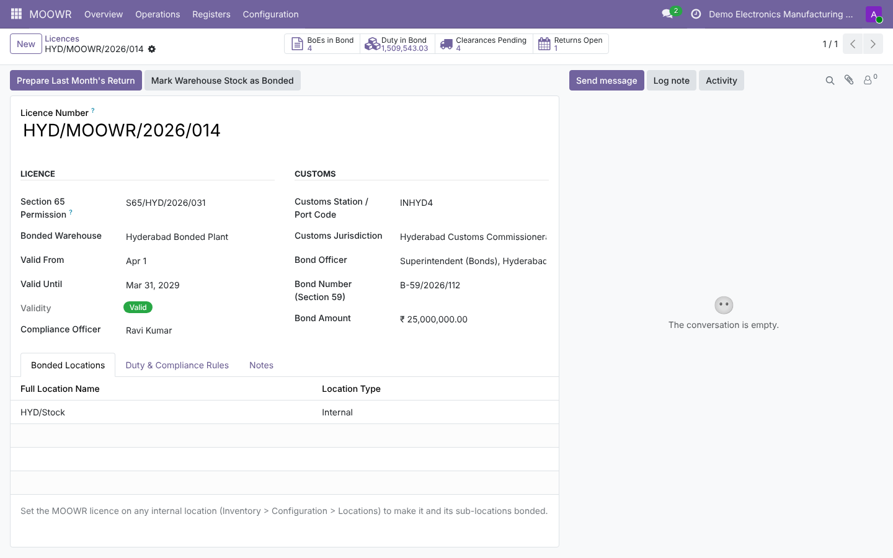
Set the goods type, customs tariff code and default BCD, SWS and IGST rates once per product.
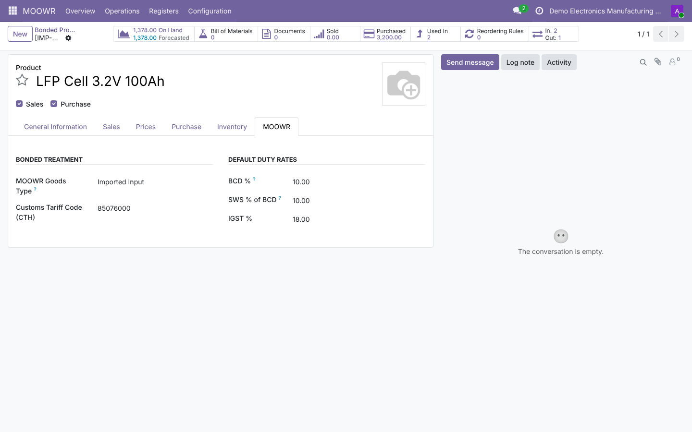
Lines from foreign suppliers for imported inputs going into a bonded location are flagged automatically. Create the bill of entry from the order.
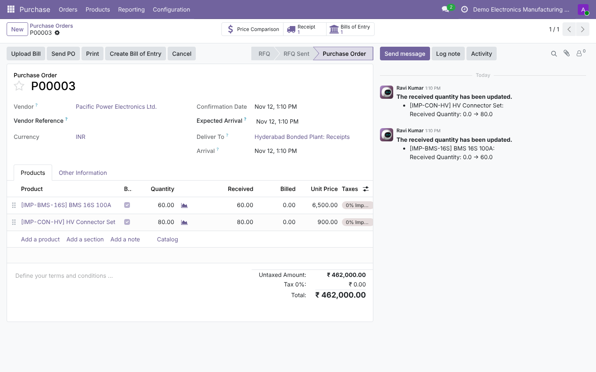
Assessable value and duty per line, totals for BCD, SWS, IGST and duty deferred, received quantity and the duty still in bond.
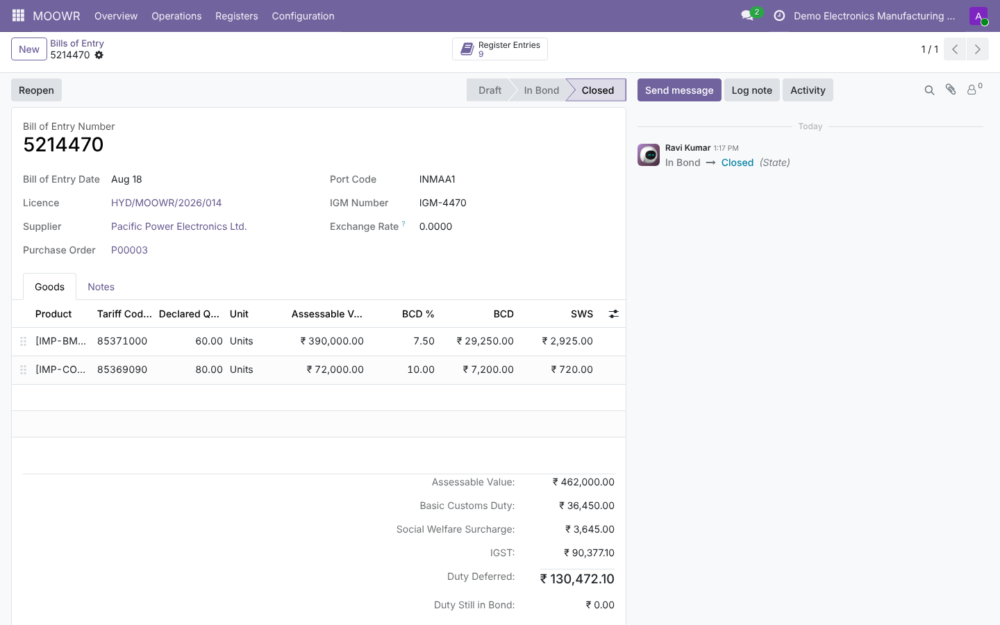
Received, consumed, cleared, exported and balance per bill of entry line, with value and duty in bond, age in days and the interest that would apply if cleared as such today.
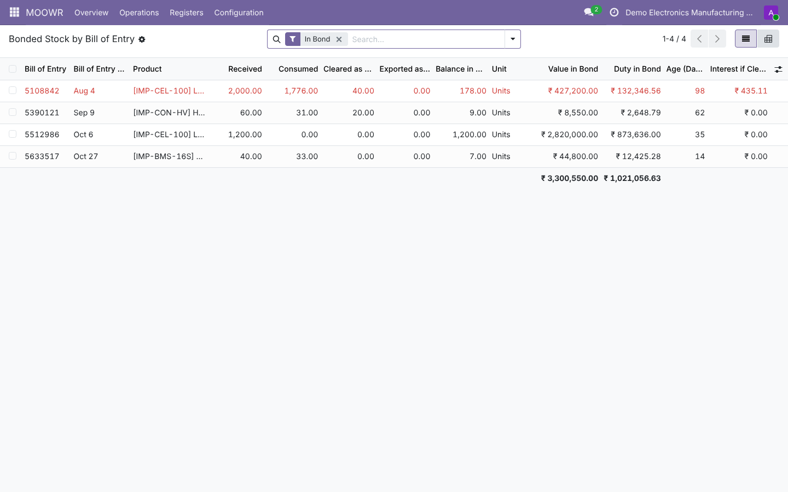
Each completed manufacturing order shows the imported inputs it used, their bills of entry, and the duty carried into each finished unit.
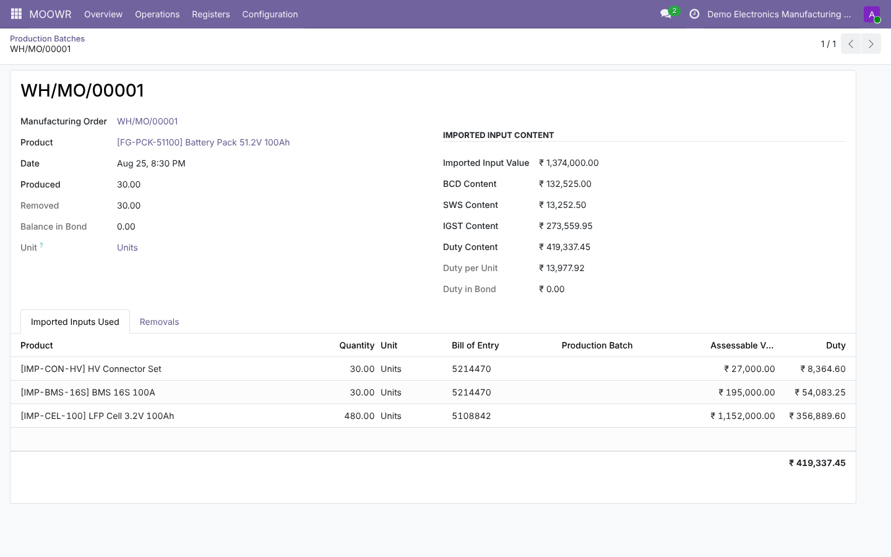
Duty broken down into BCD, SWS and IGST per bill of entry, interest for goods cleared after the free period, and the amount payable. File it, then record the payment reference.
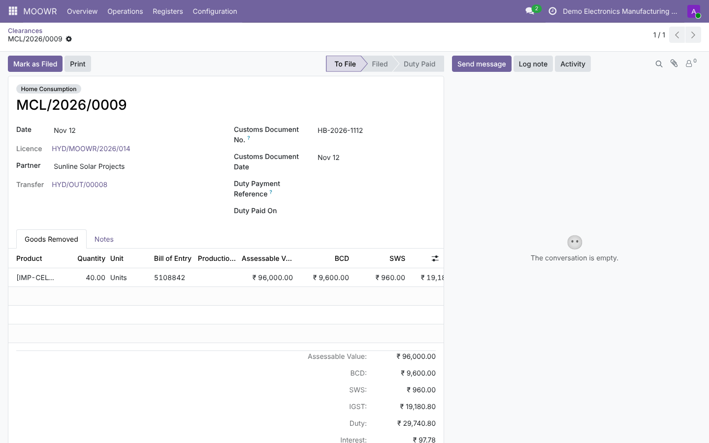
Home consumption, export and scrap removals with duty payable, duty not payable and status.
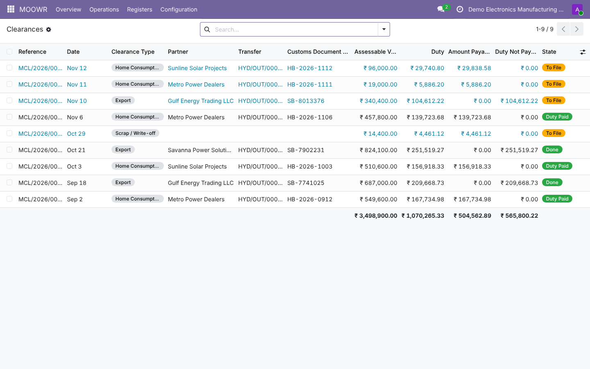
Choose automatic, home consumption or export, and enter the shipping bill or ex-bond bill of entry number on the delivery.
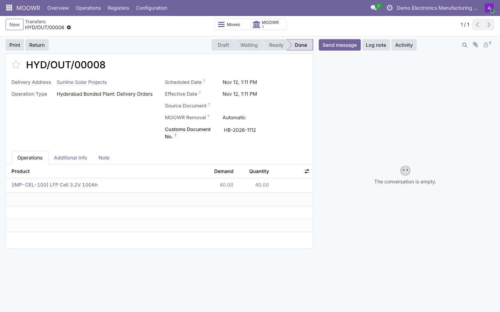
The full movement record required under Regulation 17: receipts, consumption, production, removals, exports and scrap.
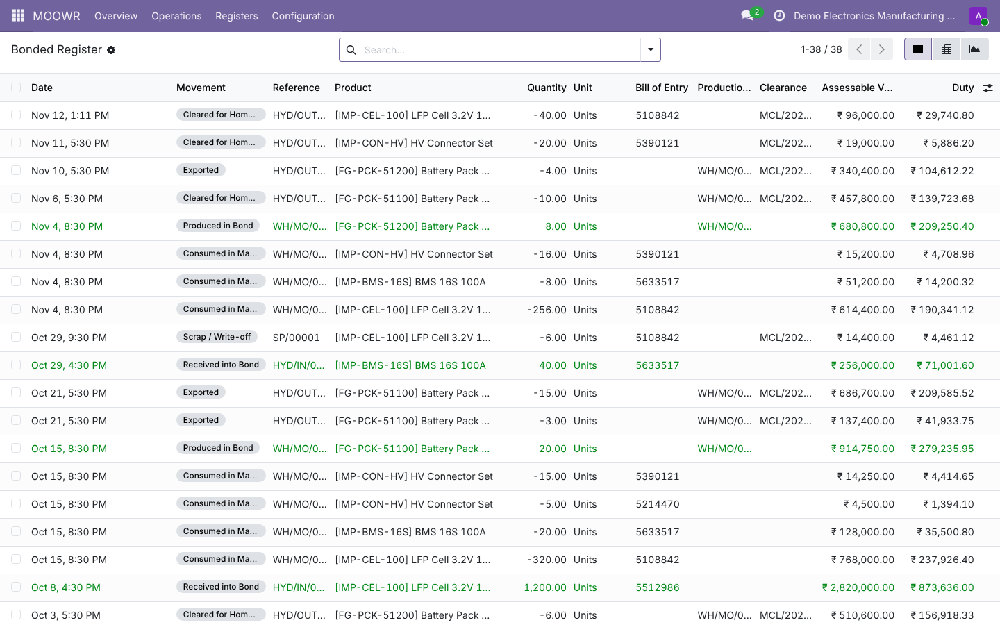
Pivot and graph views of duty by month and movement type.
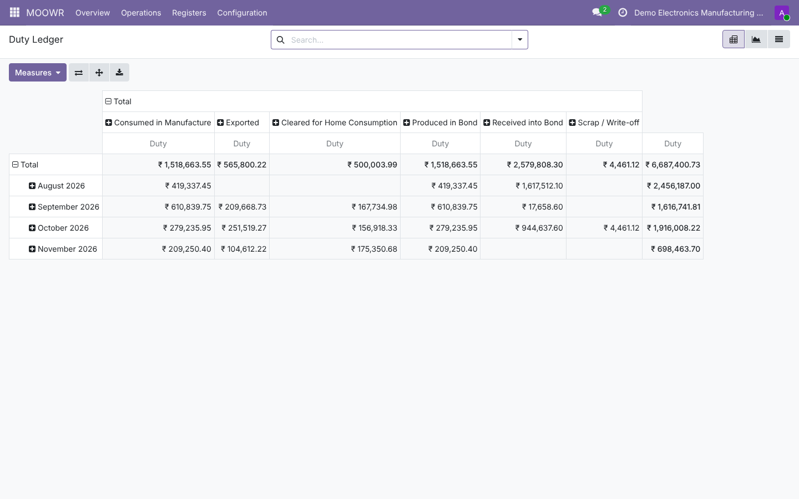
Period summary, due date, late warning and the acknowledgement once filed.
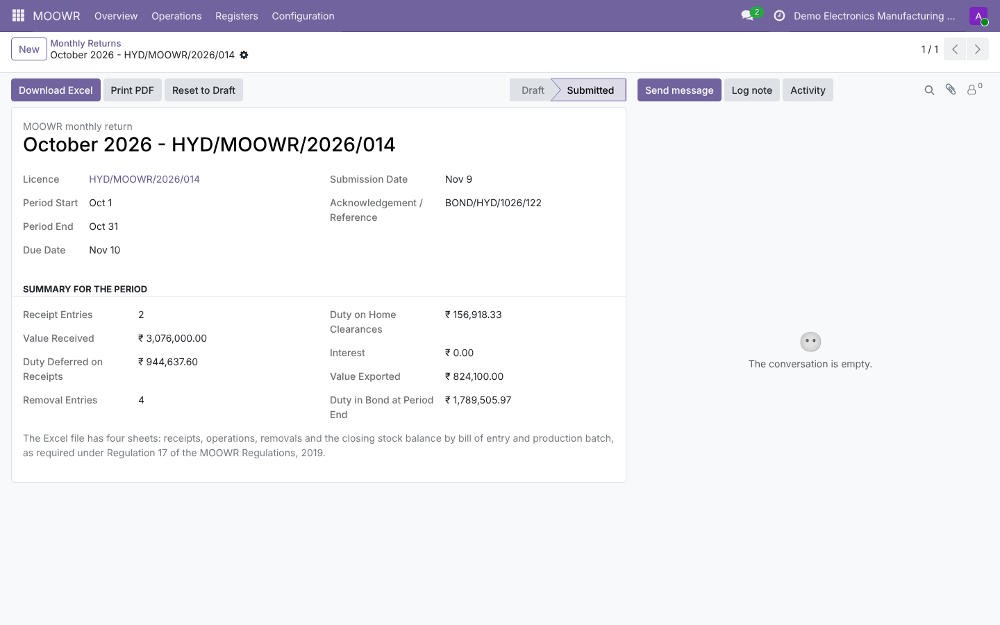
Four sheets: receipts, operations, removals and the stock balance by bill of entry and batch.
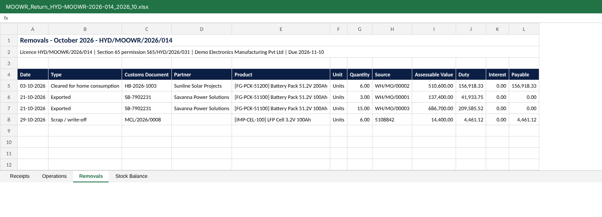
A printable return with the certification line for the authorised signatory.
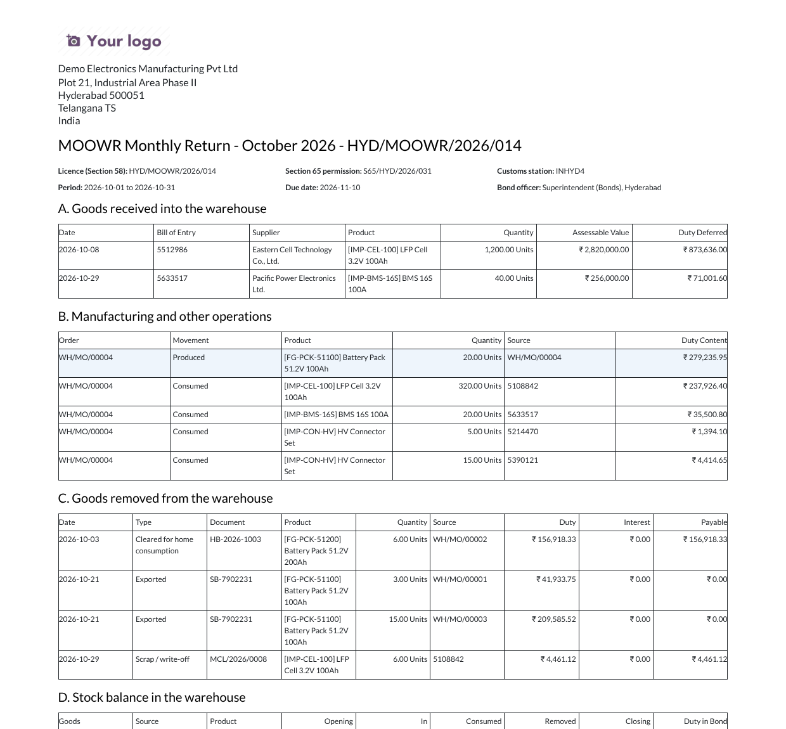
Note: this app helps you keep MOOWR records and prepare returns. Please confirm return formats and duty treatment with your customs advisor or bond officer, as practice can vary by customs station.
Official Odoo partner in Hyderabad, India, with 12+ years of ERP implementation for manufacturers. We can set up the app, migrate your bonded stock and train your team.